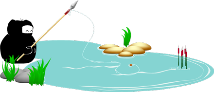

A ninja must master being both industrius and ingenius in their practice.
Discipline and Principle
I'm Ninja!
(you don't see me)
Some of the cool things about Yee:
- Deemed a "CSS Ninja" by peers
- Skilled in traditional art concepts and design
- Sans-WYSIWYG - codes by hand
- Browser agnostic coding practices
- Intrinsically motivated to learn
- Excellent written and verbal communication
All around good guy to have on your team!
Developer
gearing up for Wordpress development- HTML/XHTML Strict/HTML5
- CSS/CSS3
- Jquery
- Basic Javascript
- Basic PHP
- Basic MySQL
Programs
- Photoshop
- Illustrator
- Basic Fireworks
- Basic Flash
- Microsoft Office
- Windows OS (XP, Vista, and 7)
- Mac OSX
Text Editors
- TextMate
- SublimeText2
- Dreamweaver
- Notepad++
Education
atleast the formal stuff...- Bachelor's - Multimedia Design & Development
- Associate's - Web Graphic Design
- Associate's - Computer Animation
Download my resume: Word version (.doc)PDF version
Web Designer
Starting a new position with PureRed Interactive as their Web Developer and Designer. I'm more of a pure developer over there putting together landing pages, Facebook apps and games, and brochure sites.
Freelancer
I am only taking projects that will not ethically place me in direct competition of my place of employment.
Mentorship
I am open to both being a mentor as well as a mentee for those who would possibly entertain me. It's a great growth opportunity for me either way. :)
ninjapowa adv. extraordinary; suddenly; in a flash
( pew pew )